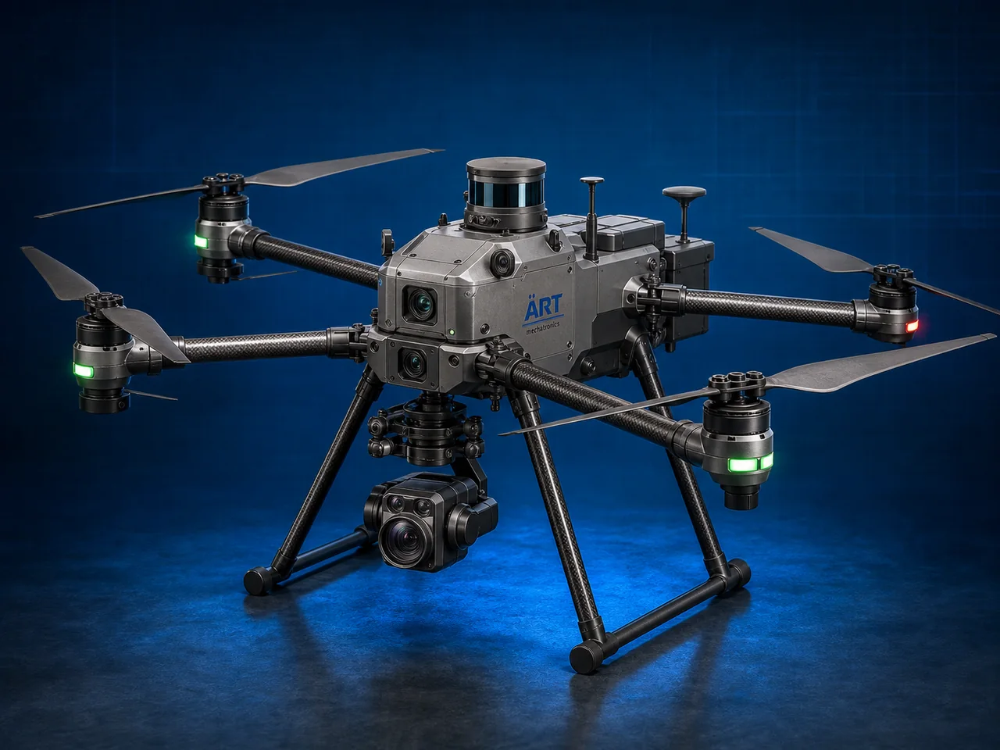

Industrial & Agriculture Drone (Smart UAV Drone System)
An Industrial & Agriculture Drone, also known as a UAV Drone, Smart Industrial Drone, Agricultural Spraying Drone, or Unmanned Aerial Vehicle System, is an advanced aerial automation solution designed for spraying, surveillance, mapping, inspection, monitoring, delivery, photography, thermal…

About the Industrial & Agriculture Drone
Drone systems are widely used for: ✔ Agricultural spraying operations ✔ Crop monitoring and analysis ✔ Industrial inspection applications ✔ Land surveying and mapping ✔ Thermal imaging and surveillance ✔ Security and monitoring systems ✔ Warehouse and logistics operations ✔ Smart industrial automation
The machine improves: ✔ Operational efficiency ✔ Precision monitoring accuracy ✔ Labor reduction ✔ Safety in hazardous operations ✔ Data collection speed ✔ Productivity optimization ✔ Industrial automation performance
Industrial drone systems use: ✔ GPS and autonomous navigation technology ✔ High-resolution cameras and sensors ✔ AI-based flight control systems ✔ Real-time data transmission technology ✔ Smart automation and obstacle detection systems
to perform intelligent aerial operations with superior accuracy, efficiency, and high industrial productivity.
Industrial and agriculture drones are widely used in industries such as:
Agriculture industries Construction industries Mining industries Energy industries Security industries Logistics industries Infrastructure industries Industrial manufacturing industries
where automation, aerial monitoring, precision operations, and remote accessibility are essential.
The machine is highly suitable for: ✔ Crop spraying and monitoring ✔ Industrial inspection operations ✔ Surveying and mapping systems ✔ Thermal and security surveillance ✔ Smart warehouse monitoring ✔ Industrial automation and aerial data collection systems
ART Mechatronics offers high-performance industrial and agriculture drones, engineered for intelligent aerial operation, rugged field performance, smart automation, and reliable long-term industrial productivity.
Working Principle of Industrial & Agriculture Drone
- 1. Flight Planning & Navigation Setup Process Drone flight path and operational parameters are programmed using GPS-based navigation and smart control systems.
- 2. Autonomous Flight & Smart Operation Process Drone uses AI-enabled flight controllers, sensors, and autonomous navigation systems to perform aerial operations accurately and efficiently.
Advanced stabilization and obstacle avoidance technology ensure safe and precision drone operation.
- 3. Industrial & Agriculture Operation Drone handles applications such as: ✔ Crop spraying ✔ Fertilizer spreading ✔ Land surveying ✔ Thermal imaging ✔ Industrial inspection ✔ Security surveillance ✔ Mapping operations ✔ Smart monitoring systems
accurately and continuously.
- 4. Data Collection & Intelligent Processing Process Machine performs: Aerial mapping Precision spraying Real-time monitoring Thermal scanning Crop health analysis Industrial inspection
for efficient industrial automation and smart field operations.
- 5. Intelligent Automation & Connectivity Integration Optional systems include: AI-based automation systems Obstacle avoidance sensors HD and thermal cameras Real-time cloud connectivity Remote monitoring systems
- 6. Data Reporting & Mission Completion Operational data and aerial images processed automatically for: Agriculture analysis Industrial maintenance Security operations Infrastructure planning Warehouse monitoring Smart decision-making systems
Types of Industrial & Agriculture Drones
- 1. Agriculture Spraying Drone Designed for: ✔ Fertilizer and pesticide spraying applications
- 2. Survey & Mapping Drone Suitable for: ✔ Land surveying and aerial mapping systems
- 3. Inspection Drone System Uses: ✔ Industrial equipment and infrastructure inspection operations
- 4. Thermal Surveillance Drone Designed for: ✔ Security, monitoring, and thermal imaging systems
- 5. Delivery & Logistics Drone Suitable for: ✔ Smart warehousing and transportation operations
- 6. Fully Autonomous Industrial UAV System Designed for: ✔ Complete industrial aerial automation operations
Industries Using Industrial & Agriculture Drones
🌾 Agriculture Industry Crop spraying, precision farming, and agricultural monitoring systems. 🏗️ Construction Industry Land surveying, infrastructure mapping, and project monitoring systems. ⚡ Energy Industry Powerline inspection, solar farm monitoring, and thermal analysis systems. ⛏️ Mining Industry Mine surveying, safety inspection, and aerial mapping operations. 🛡️ Security & Surveillance Industry Industrial monitoring and perimeter security systems. 🏭 Industrial Manufacturing Industry Warehouse automation, inspection, and industrial monitoring systems.
Features & Advantages
✔ High-precision autonomous aerial operation ✔ AI-enabled smart flight and monitoring systems ✔ Energy-efficient and intelligent UAV technology ✔ GPS and automation control systems ✔ Improves operational efficiency and monitoring accuracy ✔ Reduces manual labor and hazardous field exposure ✔ Supports multiple industrial and agricultural applications ✔ Reliable long-term industrial performance ✔ Smooth integration with smart industrial automation systems
Technical Highlights
Machine Type: Industrial drone Agriculture UAV system Smart aerial automation drone Application Compatibility: Agriculture fields Industrial plants Construction sites Warehouses Mining zones Infrastructure projects Integration: GPS navigation systems AI flight control systems Thermal imaging cameras Remote monitoring systems Features: Autonomous flight systems Obstacle avoidance sensors HD video transmission Cloud data connectivity Real-time analytics systems Applications: Crop spraying Aerial surveying Industrial inspection Thermal monitoring Security surveillance Warehouse automation Automation: Semi-automatic Fully autonomous industrial systems
Turnkey Drone Automation Solutions
ART Mechatronics offers: Complete industrial and agriculture drone systems Automatic aerial monitoring and spraying solutions Industrial inspection and mapping systems Smart automation and connectivity integration Installation & commissioning After-sales service & AMC
Why Choose Art Mechatronics
Expertise in industrial automation and smart aerial systems Customized drone solutions for multiple industries High-performance and intelligent UAV technology Advanced AI and GPS automation systems Proven industrial aerial operation performance across sectors
Applications
Agriculture Farms Construction & Infrastructure Projects Industrial Manufacturing Facilities Mining Operations Warehouse & Logistics Centers Security & Surveillance Projects
Related Automation & Robotics machines
Get pricing & specs for the Industrial & Agriculture Drone
Share the product, target capacity, current process and plant location. These details help our engineers discuss the right machine or line configuration.
One partner, from design to start-up
ART Mechatronics designs, manufactures, installs and commissions your Industrial & Agriculture Drone solution with regional presence in India, UAE and Thailand.